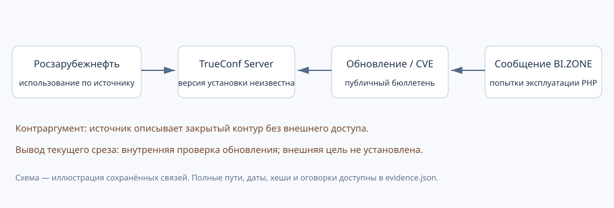

Кейс 03. TrueConf/PHP: проверка гипотезы и контраргумент
Срез: 2026-10-24T14:46:40+00:00. Горизонт наблюдения: 30 дней, до 2026-11-23. Это разбор условной гипотезы на сохранённых публичных данных. Он не устанавливает атаку, неустранённую уязвимость или вероятность будущего события.
Вопрос аналитика и решение
Можно ли по свежему уведомлению TrueConf и сообщениям об эксплуатации PHP включить Росзарубежнефть в список возможных внешних целей? По текущим основаниям — нет. Очередь возвращает internal_patch_review: проверку обновления внутри организации. Установленная версия неизвестна; источник о внедрении описывает закрытый контур. Такое решение не является утверждением о безопасности компании.
Схема: компания использует продукт ← описание обновления → CVE ← общий исследовательский отчёт.

Проверяемая цепочка
Официальный кейс TrueConf от 16.08.2026 описывает использование TrueConf Server в собственном ЦОД Росзарубежнефти. В том же источнике указан закрытый контур без внешнего доступа. Это датированное публичное утверждение разработчика о внедрении; установленная версия и современная доступность системы из него не следуют. В сохранённой базе связь проверена отдельно, её ID — 4dfd7e33942a1e8b617784b5.
Автоматически собранное уведомление TrueConf сообщает об исправлении PHP в Server 5.5.8. Для веток 5.4 и 5.3 источник даёт отдельные указания. Область уведомления нужно читать по веткам: из номера исправления нельзя произвольно выводить диапазон всех клиентских установок. Ручной разбор области бюллетеня и автоматическая загрузка его текста отмечены отдельно.
Журнал изменений TrueConf связывает выпуск 5.5.8 с CVE-2026-109618 и CVE-2026-109619. Этот мост между продуктом и CVE добавлен вручную по индексируемому фрагменту первоисточника; полная версия раздела напрямую не архивирована. Ограничение доступа сохранено, ручной шаг не выдаётся за автоматическую обработку.
Автоматическая новость BI.ZONE от 22.10.2026 сообщает о попытках эксплуатации этих CVE в PHP. Совпадение идентификаторов обосновывает справочную связь с обновлением продукта. Оно не устанавливает эксплуатацию TrueConf Server, атаку на Росзарубежнефть или конкретную группировку.
Реестр оснований
Полные хеши текстов, время сбора, способ получения и метаданные находятся в evidence.json. Срез совпадает с поставляемым SQLite-снимком; будущие изменения рабочей базы этот кейс не изменяют. Интерактивный подграф раскрывает сохранённые свойства и ссылки.
Почему гипотеза ограничена
Использование продукта сопоставлено точно: TrueConf Server не подменяется TrueConf Enterprise или клиентским приложением. Давность использования на срезе — 69 дней, уведомления — 2 дней. В правилах очереди они проходят пороги 180 и 30 дней. Эти пороги экспертные, их прогнозная полезность не измерена.
Неизвестная версия не позволяет подтвердить применимость уязвимости к установке. Закрытый контур — контраргумент к гипотезе внешней доступности, а не доказательство отсутствия внутренних угроз. Общий отчёт об эксплуатации PHP не заменяет адресный сигнал о компании. Участие других организаций в bug bounty в эту цепочку угрозы не включается.
Три материала TrueConf относятся к одной группе источников и не считаются тремя независимыми подтверждениями. BI.ZONE даёт отдельное основание об эксплуатации PHP в общем, а не проверку состояния клиента. Общий технический индекс компании может учитывать другие CVE; этот балл не используется вместо условий конкретного бюллетеня и сведений о сетевой доступности.
Что могло бы изменить решение
- Датированное официальное сообщение об актуальной версии или исправлении изменит оценку применимости. Подтверждённая исправленная версия исключит соответствующую техническую гипотезу.
- Новое официальное описание доступности и конфигурации может заменить прежнее основание о закрытом контуре. Неизвестность сама по себе не доказывает внешний доступ.
- Адресный отчёт самой организации, регулятора или исследователя может дать самостоятельное основание о событии; его нужно проверить отдельно.
Это условия будущей переоценки, а не найденные сведения о компании. Активные проверки, сканирование инфраструктуры и попытки эксплуатации не проводились.
Как воспроизвести и оценивать полезность
Офлайн-команда scripts/review.py восстанавливает публичный снимок и пересчитывает решение. decision.json содержит исходную гипотезу, прохождение условий и ограничения; score_snapshot.json — отдельные экспертные индексы без вероятностной интерпретации; graph.cypher раскрывает путь в Neo4j. Подграф не содержит связи «атака на компанию», выведенной из соседства CVE и продукта.
Для последующего наблюдения заранее определён горизонт 30 дней. Регистрируются новые публичные основания и причины изменения решения. Отсутствие сообщения об атаке не означает, что атаки не было; неизвестные исходы должны остаться неизвестными. Один такой разбор не позволяет оценить Precision@K или прогнозную точность.